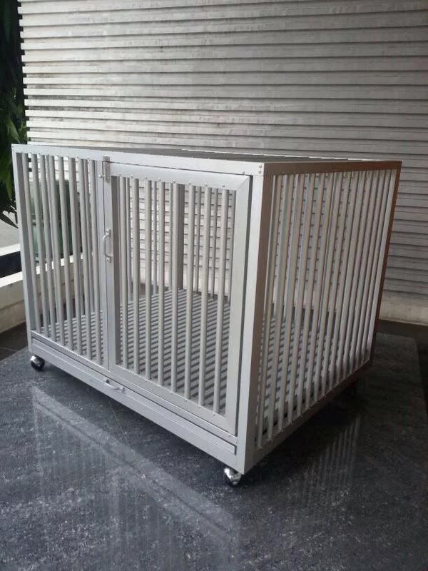
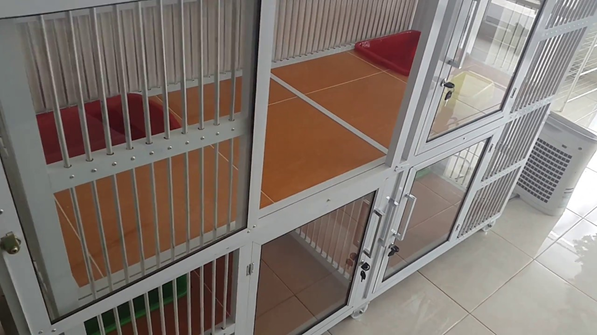

Jual Kandang Hewan Aluminium Banjar Termurah
Jual Kandang Hewan Peliharaan Aluminium di Banjar – Mempunyai binatang peliharaan tentunya menjadi hal yang menyenangkan. Anda bisa menghasilkan hewan-binatang peliharaan sebagai sumber hiburan anda ketika di rumah, salah satu binatang yang paling banyak dijadikan peliharaan ialah hewan Peliharaan. Kecuali sifatnya yang ramah kepada manusia, tampilannya yang lucu menjadi kekuatan tarik tersendiri. Sedangkan tinggal bersama dengan anda, namun hewan Peliharaan peliharaan anda tentunya semestinya memiliki daerah tersendiri, entah untuk makan, tidur, maupun kegiatan lainnya. Sehingga berharap tak berkeinginan anda sepatutnya membikin rumah atau kandang bagi hewan Peliharaan kesayangan anda.
Sangkar atau rumah hewan Peliharaan adalah salah satu hal yang tidak boleh luput dari perhatian anda. Patut ini dikarenakan, dengan adanya kandang tersendiri hewan Peliharaan anda bisa nyaman dan kesehatannya pun konsisten terjaga. Sangkar hewan Peliharaan bisa anda beli kios-kios perlengkapan hewan terdekat. Melainkan untuk menghemat budget, anda dapat membikin sendiri sangkar hewan Peliharaan yang nyaman dan aman untuk hewan Peliharaan anda. Banyak bahan material yang dapat anda pakai untuk kandang hewan Peliharaan anda mulai dari kayu, kawat, pipa, dan masih banyak lainnya. Kali ini akan dibahas lebih lanjut mengenai tips buat rumah hewan Peliharaan dari kayu minimalis sederhana, berikut ini penjelasannya.
Lokasi Penempatan Rumah Hewan Peliharaan

Harus pertama yang wajib dilihat dalam tips buat rumah hewan Peliharaan dari kayu simpel merupakan lokasi penempatan dari kandang hewan Peliharaan hal yang demikian. Lokasi penempatan sangkar juga perlu diperhatikan, sehingga hewan Peliharaan anda bisa merasa nyaman Pilih daerah dimana anda akan meletakkan kandang hewan Peliharaan anda, entah indoor maupun outdoor. Apabila anda mempunyai area rumah yang luas, maka dianjurkan untuk anda membikin kandang hewan Peliharaan yang terpisah sehingga bisa memberikan kenyaman baikbagi anda ataupun hewan Peliharaan anda. Melainkan kalau terpaksa patut ditempatkan di dalam rumah, amati pemeliharaan kandang sehingga bau nya tak akan mengganggu anda.
Untuk kandang indoor sendiri, memang mempunyai keunggulan yang lebih aman dan mudah pemerhatiannya. Untuk itu, amati sirkulasi udara dengan menggunakan pendingin ruangan. Kebersihan sangkar juga patut diperhatikan supaya bau tak menyebar kemana-mana.
Tapi sekiranya anda ingin menempatkan rumah hewan Peliharaan hal yang demikian di outdoor, maka tentu saja anda tak perlu mengamati sirkulasi udara di dalam kandang. Anda juga tidak sellau harus memelihara sangkar tiap harinya. Tapi satu hal yang perlu dikhawatirkan merupakan mengenai dilema keamanan pada sangkar.
Pemilihan Bahan
Kandang anda ingin membikin rumah hewan Peliharaan dari material kayu, pastikan apabila material yang dipakai aman dan nyaman untuk hewan Peliharaan anda. Kecuali itu, pilihlah material kayu yang kuat sehingga sangkar tetap terjaga dengan bagus. Anda juga bisa mengkombinasikan dua material atau lebih dalam pembuatan kandang hewan Peliharaan anda. Misal nya saja, anda mengaplikasikan kayu untuk pilar dan komponen atap, meskipun pada bagian sisi sisi kandang memakai kawat. Kombinasi ini membuat hewan Peliharaan-hewan Peliharaan anda mendapatkan cahaya yang cukup, melainkan juga aman dari terik dan hujan.
Penyesuaian Ukuran Sangkar Dengan hewan Peliharaan

Model buat rumah hewan Peliharaan dari kayu sederhana selanjutnya yaitu pengukuran sangkar yang akan dibuat sehingga dapat membikin hewan Peliharaan merasa nyaman di dalamnya. Panas tubuh yang diwujudkan hewan Peliharaan cuma dapat menghangatkan tempat yang berukuran kecil saja. Dapat tak ada ukuran khusus mengenai ukuran sangkar ini, asal ideal dan hewan Peliharaan anda nyaman saja.
Buatlah Selain Atap Penataan Kandang Dilepas
Dalam rumah hewan Peliharaan, tentunya fungsi atap kandang sungguh-sungguh amat dibutuhkan. Dengan adanya atap, hewan Peliharaan anda bisa terbebas dari panas, hujan, dan lainnya jikalau anda menempatkannya di luar ruangan. Dengan pembuatan atap yang dapat dilepas dengan gampang karenanya dapat membantu anda untuk mengganti alas yang kumal. Selain itu, desain atap seperti ini anda juga dapat memeriksa situasi binatang anda. anda membuat rumah hewan Peliharaan sendiri, maka pasang bagian atap pada dinding dengan menggunakan engsel.
Buat Pintu Masuk dan Pintu Keluar
Dalam tips buat rumah hewan Peliharaan dari kayu modern, jangan lupa untuk membuat pintu masuk dan pintu keluar di dalamnya. hewan Peliharaan akan lebih suka rumah yang memiliki dua pintu di dalamnya. Wajib ini supaya mereka bisa menghindari pemangsa yang ada di pintu lainnya. Setidaknya buatlah dua jalan masuk yang berukuran 15×15 cm pada sisi-sisi yang berbeda.
Buatlah Sangkar Sedikit Lebih Tinggi
Bagi anda yang meletakkan sangkar di luar rumah, pastikan untuk meninggikan jarak sangkar anda dengan tanah di sekitarnya. Sehingga hewan Peliharaan anda tidak terkena hujan atau genangan air yang berada di sekitarnya. Anda dapat membikin pintu masuknya pada sisi yang terdapat pijakan di depannya. Sehingga hewan Peliharaan bisa melompat ke atas. Buatlah pintu lain di sisi lainnya yang tanpa pijakan pada komponen bawahnya. Sehingga tak ada pemangsa yang bisa menjangkau hewan Peliharaan anda di dalam sangkar.
Info Pemesanan:
Sumber Referensi: https://www.dis.or.id/jual/kandang-hewan-aluminium-banjar/